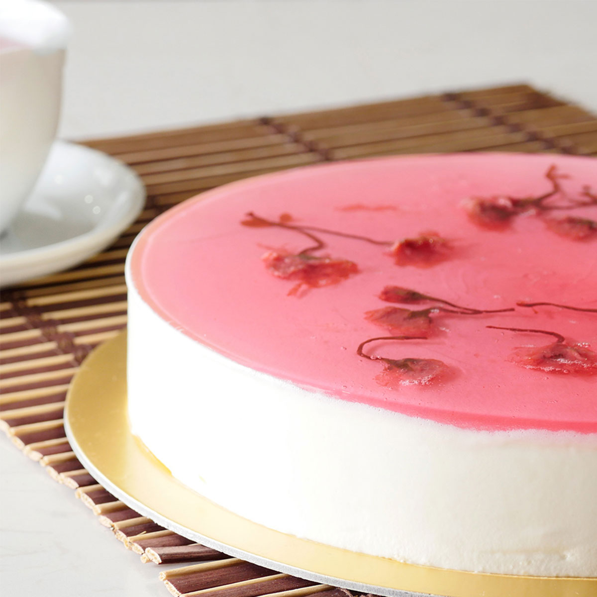

Explicacion paso a paso de como hacer un cheesecake.

Ingredientes:
Para la base:
2 huevos
1/4 de taza de azucar
40 gramos de manteca
1 cucharada de escencia de vainilla
4 cucharadas de harina 0000
2 cucharadas de Maizena
1/2 cucharadita de polvo de hornear
Para el relleno:
720 gramos de queso crema
1 1/3 taza de azúcar
3 cucharadas de Maizena
2 huevos
1 cucharadita de esencia de vainilla
1 limón (ralladura)
2/3 taza de crema
Para la salsa:
250 gramos de frambuesas
½ taza de azúcar
2 cucharadas de Maizena
½ taza de agua
Preparacion:
Para la base:
Batí las yemas con la mitad del azúcar durante 5 minutos. Añadí la manteca derretida a temperatura ambiente y la esencia de vainilla.
Añadí los ingredientes secos tamizados. Con movimientos envolventes, incorporá las claras batidas a punto nieve con el resto del azúcar.
Colocá en un molde de 20cm. de diámetro tapizado con papel manteca enmantecado y cociná en horno precalentado a temperatura media (180 ºC) durante 15 minutos aproximadamente. Retirá y dejá enfriar
Para el relleno:
Batí el queso tipo Finlandia.
Añadí el azúcar previamente mezclada con la Maizena.
Luego los huevos de a uno sin batir demasiado, la esencia de vainilla, la ralladura de limón y por último la crema.
Colocá sobre la base.
Envolvé la base y los bordes del molde con papel de aluminio y
cociná sobre una placa con un fondo de agua caliente (baño de María)
a temperatura media a baja (170°C) durante 1 hora 20 minutos aproximadamente.
Apagá el horno y dejá reposar ahí durante media hora. Retirá y dejá enfriar. Siempre es mejor prepararla 1 día antes de consumirla.
Para la cobertura:
Colocá todos los ingredientes en una cacerolita y cociná hasta que rompa el hervor. Retirá y dejá enfriar
Desmoldá y cubrí con la salsa.
Ahora podes disfrutar de un delicioso cheesecake ♡
La verdad la receta es para un cheesecake de frambuesa pero este se ve mas lindo